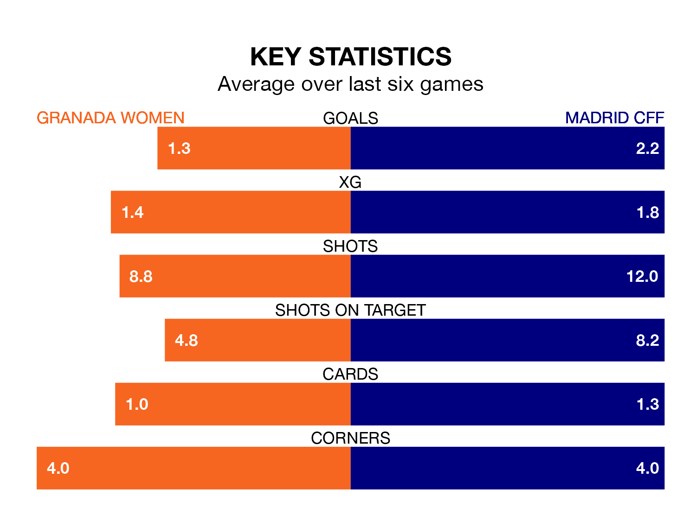

Relegation candidates Granada Women face a challenge against high-flying Madrid CFF at Ciudad Deportiva del Granada CF on Sunday.
Granada Women are 14th in the Liga F table, and have picked up four wins and three draws in their 21 games to date.
Madrid CFF, meanwhile, are fourth in the standings with 42 points, having won 13 and drawn three, and are 19 points behind table-toppers Barcelona Women.
With 49 goals in 21 games so far this season, Madrid CFF are the league's third-highest scorers with 2.3 goals per game. And they are conceding fewer than average, letting in 32 goals at a rate of 1.5 per game.
Granada, meanwhile, are below average scorers, with 1.0 goal per game, compared to a league average of 1.6. They have conceded 1.9 goals per game.
The visitors' Karen Araya is among the league's most creative players, racking up seven assists in 21 appearances so far this season, and holding third spot in Liga F's assist charts.
For the home team, Naima García Aguilar has set up the most goals, having laid on three assists in 21 games.
Granada are in mixed form in Liga F, with two wins and two draws from their last six games.
With three wins and two draws over that period, Madrid CFF's form is better – they have taken 11 points from 18, compared to Granada's eight.
Granada's last match was on March 23, a 4-1 loss against Valencia Women, with Laura Requena Sánchez getting the goal for Granada.
Madrid CFF beat Sporting de Huelva 2-1 last time out, on Sunday, with Giovana Queiroz and Monica Hickmann Alves on the scoresheet.
Updated: 12:16 (UTC), 25/03/24